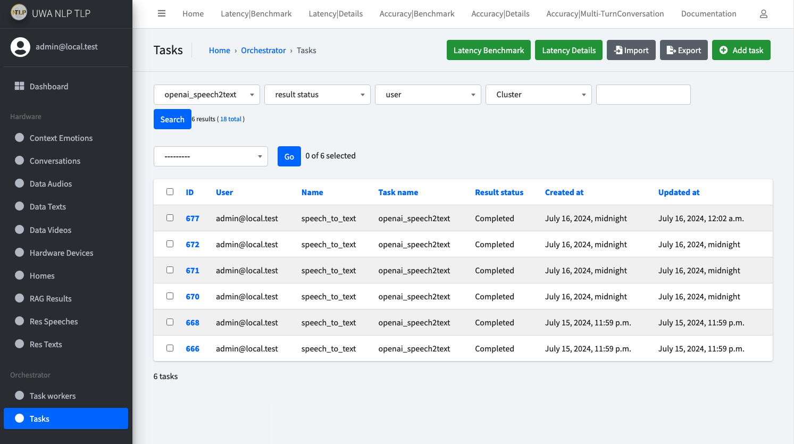
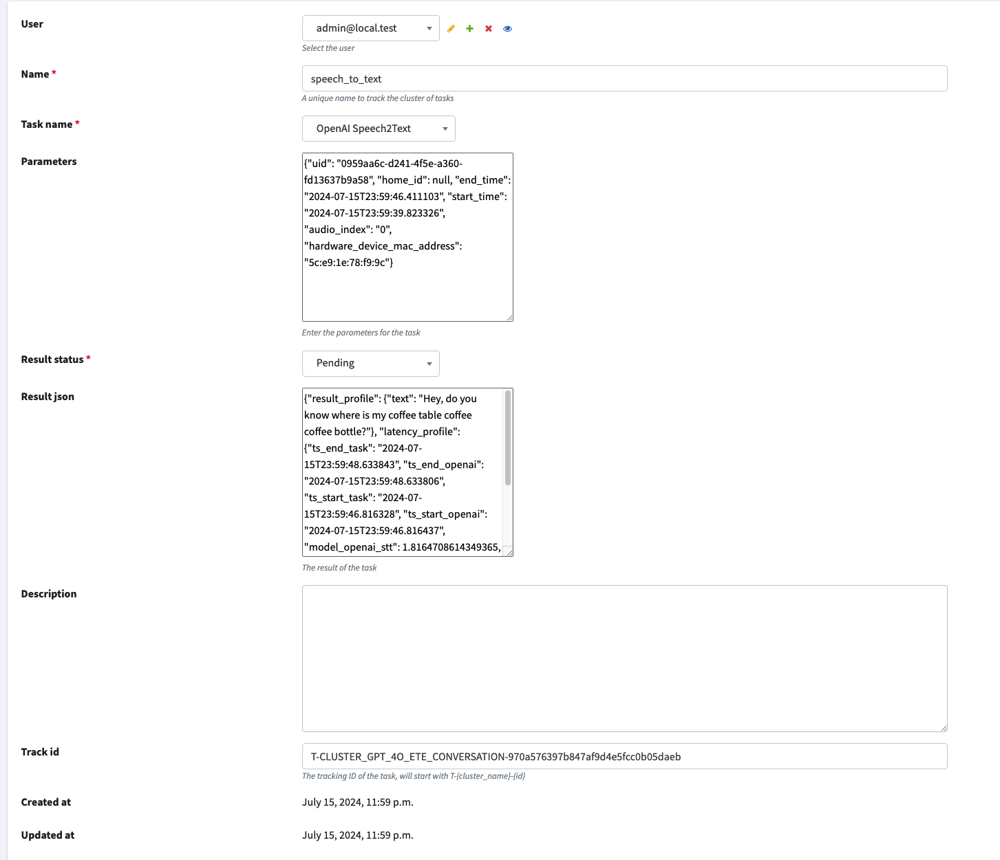

Pipeline customisation
Explanation
We have provided a list of built-in Pipelines for demonstration and evaluation purpose.
For example, we got:
- CLUSTER_Q_ETE_CONVERSATION:
- Speech2Text with local Whisper
- Emotion Detection
- Quantization Local LLM
- Text2Speech
- CLUSTER_Q_NO_EMOTION_ETE_CONVERSATION_NAME:
- Speech2Text with local Whisper
- Emotion Detection
- Quantization Local LLM
- Text2Speech
- CLUSTER_HF_ETE_CONVERSATION:
- Speech2Text with local Whisper
- Emotion Detection
- HuggingFace Local LLM
- Text2Speech
- CLUSTER_GPT_4O_ETE_CONVERSATION:
- Speech2Text OpenAI API
- GPT-4o with image and text
- Text2Speech
- CLUSTER_GPT_4O_TEXT_ETE_CONVERSATION:
- Speech2Text OpenAI API
- GPT-4o with text only
- Text2Speech
- CLUSTER_GPT_35_ETE_CONVERSATION:
- Speech2Text OpenAI API
- GPT-3.5 with text
- Text2Speech
- CLUSTER_GPT_35_RAG_ETE_CONVERSATION:
- Speech2Text OpenAI API
- GPT-3.5 with text
- RAG
- Text2Speech
After the evaluation, we found out, for all the pipelines, under the Nvidia 3080 GPU, none of the latency is acceptable. The best performance is the GPT-3.5 pipeline with text only as input, which has a latency of around 8-10 seconds. For the GPT-4o, the API latency is around 3-8 seconds, when you feed more images data in, the latency will increase significantly.
So if you have an idea, and a solution, you want to test out whether it is acceptable, how should you do that?
First go to the code place: API/orchestrator/chian/clusters.py
This is the places we put all the pipeline configurations, as shown above.
Here is an example of the pipeline configuration:
"""
Cluster for gpt3.5 model and gpt3.5 with RAG
"""
CLUSTER_GPT_35_RAG_ETE_CONVERSATION_NAME = "CLUSTER_GPT_35_RAG_ETE_CONVERSATION"
CLUSTER_GPT_35_RAG_ETE_CONVERSATION = {
"openai_speech2text": {
"order": 0,
"extra_params": {},
"component_type": "task",
"task_name": "openai_speech2text",
},
"completed_openai_speech2text": {
"order": 1,
"extra_params": {},
"component_type": "signal",
"task_name": None,
},
"created_data_text": {
"order": 2,
"extra_params": {},
"component_type": "signal",
"task_name": None,
},
"completed_rag": {
"order": 3,
"extra_params": {},
"component_type": "task",
"task_name": "rag",
},
"completed_openai_gpt_35": {
"order": 4,
"extra_params": {
"prompt_template": """{text}""",
},
"component_type": "task",
"task_name": "openai_gpt_35",
},
"completed_openai_text2speech": {
"order": 5,
"extra_params": {},
"component_type": "task",
"task_name": "openai_text2speech",
},
}
First, we need to define a cluster name, which is the pipeline.
This cluster name will be the one when you started your audio acquisition, you can specify which cluster you want to use
by the --track_cluster
When you stop talk and the audio acquisition will send the audio you spoke to the API with a track_id, which is in the
format of T-{cluster_name}-{uid_for_this_conversation}.
Like: T-CLUSTER_GPT_35_RAG_ETE_CONVERSATION-f6bf3b78e4f5484abf949790c8451856.
API side will base on the cluster_name to trigger the relevant pipeline and tasks, and all the downstream task for this conversation within the pipeline will be grouped with this track_id to ensure the pipeline observability.
We have a table called Task to manage all the different types of tasks, this can be decomposed to a queue system if we
want to bring this into production for more complex design.
Currently, to maintain a simple and flexible design, every Agent task will be recorded inside the Task table, and we will
base on this table to analyse the progress of the pipeline, health of the system.

For example, with the track_id above, the example pipeline will be triggered.
First, it will go to create a task, which name will be openai_speech2text, and status will be pending with proper
parameters.
Agent consumer will consume this task, and after the task is done, it will update this task record with the
status completed.
And the metadata generated during the Agent module running process will be saved in the result_json field, with two
primary key
- result_profile: this will store the results we expect for this task, like the generated text
- latency_profile: this will store the time point information for critical time points and duration information for both model inference and data transfer.
It will be like this:

When Agent module call API endpoint to update the task status, it will trigger a completed_task Signal (
check Django Signal for further details), which is acting as
the Router to dispatch different following tasks.
The specific code to implement this is in API/orchestrator/models.py, line 114-119
def save(self, *args, **kwargs):
# if it is updated, then we need to call the chain
if self.result_status == "completed":
completed_task.send(sender=self, data=self.__dict__)
super().save(*args, **kwargs)
This will override the Django Model save function for Task, when the result_status is changing to completed, it will
trigger the completed_task signal.
The completed_task signal is defined in API/orchestrator/signals.py
from django.dispatch import Signal
completed_task = Signal() # task itself
The receiver of this signal is defined in API/orchestrator/chain/complted_task.py
from django.dispatch import receiver
from authenticate.utils.get_logger import get_logger
from orchestrator.chain.models import TaskData
from orchestrator.chain.signals import (
completed_emotion_detection,
completed_hf_llm,
completed_openai_gpt_4o_text_and_image,
completed_openai_gpt_4o_text_only,
completed_openai_gpt_35,
completed_openai_speech2text,
completed_openai_text2speech,
completed_quantization_llm,
completed_rag,
completed_speech2text,
completed_task,
completed_text2speech,
)
from orchestrator.models import Task
logger = get_logger(__name__)
@receiver(completed_task)
def trigger_completed_task(sender, **kwargs):
"""
Trigger the multi-modal emotion detection.
"""
data = kwargs.get("data", {})
task_data = TaskData(**data)
if task_data.task_name == "speech2text":
return completed_speech2text.send(
sender=sender, data=data, track_id=task_data.track_id
)
if task_data.task_name == "emotion_detection":
return completed_emotion_detection.send(
sender=sender, data=data, track_id=task_data.track_id
)
if task_data.task_name == "quantization_llm":
return completed_quantization_llm.send(
sender=sender, data=data, track_id=task_data.track_id
)
if task_data.task_name == "text2speech":
logger.info("Text2Speech task completed")
return completed_text2speech.send(
sender=sender, data=data, track_id=task_data.track_id
)
if task_data.task_name == "hf_llm":
logger.info("HF LLM task completed")
return completed_hf_llm.send(
sender=sender, data=data, track_id=task_data.track_id
)
if task_data.task_name == "openai_speech2text":
logger.info("OpenAI Speech2Text task completed")
return completed_openai_speech2text.send(
sender=sender, data=data, track_id=task_data.track_id
)
if task_data.task_name == "openai_gpt_4o_text_and_image":
logger.info("OpenAI GPT4O task completed")
return completed_openai_gpt_4o_text_and_image.send(
sender=sender, data=data, track_id=task_data.track_id
)
if task_data.task_name == "openai_gpt_35":
logger.info("OpenAI GPT3.5 task completed")
return completed_openai_gpt_35.send(
sender=sender, data=data, track_id=task_data.track_id
)
if task_data.task_name == "openai_gpt_4o_text_only":
logger.info("OpenAI GPT4O Text Only task completed")
return completed_openai_gpt_4o_text_only.send(
sender=sender, data=data, track_id=task_data.track_id
)
if task_data.task_name == "rag":
logger.info("RAG task completed")
return completed_rag.send(sender=sender, data=data, track_id=task_data.track_id)
if task_data.task_name == "openai_text2speech":
logger.info("OpenAI Text2Speech task completed")
return completed_openai_text2speech.send(
sender=sender, data=data, track_id=task_data.track_id
)
task_name_choices = Task.get_task_name_choices()
task_name_choices_list = [task[0] for task in task_name_choices]
if task_data.task_name not in task_name_choices_list:
logger.error("Task name not found is not in the choices list")
return
logger.critical(f"{task_data.task_name} task completed, however, no action taken.")
We can see from the code, what it is doing is to use the track_id to match the cluster name, and then base on the configuration of this cluster, identify the next component within the cluster(pipeline).
For example, the steps will be like:
- when
openai_speech2texttask is finished completed_taskis then triggered- It will base on the current task name trigger the downstream Signal, which will go to trigger
the
completed_openai_speech2text completed_openai_speech2textreceiver is inAPI/orchestrator/chain/completed_openai_speech2text.py, it will process the results intoDataTextobject, save it to the database.- Then it will identify the current cluster based on track_id, and then identify the next component within the pipeline
based on current task name, which is
created_data_text. The classClusterManagerwill be in charge of this. - If it is a signal component, the signal will be dispatch, and the receiver will take the input and do the next step.
- If it is a task component, it will create next task, with the
extra_paramsadded to the parameters, and then save it to the database, the Agent module will listen to this, and consume it. - The process will repeat like this until it reaches the end of the pipeline.
ClusterManager code is in API/orchestrator/chain/manager.py
"""
Here will define a list of clusters
Each cluster will have a list of chain components
For example, end-to-end conversation chain will have the following components:
- completed_speech2text
- created_data_text
- completed_emotion_detection
- completed_quantization_llm
- completed_text2speech
"""
from typing import Optional, Tuple
from authenticate.utils.get_logger import get_logger
from orchestrator.chain.clusters import CLUSTERS
from orchestrator.chain.signals import created_data_text
from orchestrator.models import Task
logger = get_logger(__name__)
class ClusterManager:
@staticmethod
def get_cluster(cluster_name: str):
"""
Get the cluster
Args:
cluster_name (str): The cluster name
"""
if cluster_name in CLUSTERS:
return CLUSTERS[cluster_name]
return None
@staticmethod
def get_next_chain_component(
cluster: dict, current_component: str
) -> Tuple[Optional[str], Optional[dict]]:
"""
Get the next chain
Args:
cluster (dict): The cluster
current_component (str): The current component
Return:
Tuple[Optional[str], Optional[dict]]: The next component and its parameters if exists, otherwise None
"""
chain = []
for key, value in cluster.items():
chain.append(key)
chain.sort(key=lambda x: cluster[x]["order"])
if current_component == "init":
"""
If this is the start of the chain, then return the first component
"""
return chain[0], cluster[chain[0]]
# index of the current component
current_component_index = chain.index(current_component)
next_index = current_component_index + 1
if next_index >= len(chain):
return None, None
return chain[next_index], cluster[chain[next_index]]
@classmethod
def get_next(cls, cluster_name: str, current_component: str):
"""
Get the next component
Args:
cluster_name (str): The cluster name
current_component (str): The current component
"""
cluster = cls.get_cluster(cluster_name)
if cluster is None:
return None
return ClusterManager.get_next_chain_component(cluster, current_component)
@classmethod
def chain_next(
cls,
track_id: Optional[str],
current_component: str,
next_component_params: dict,
name: str = None,
user=None,
):
"""
Chain to the next component
Args:
current_component (str): The current component
track_id (str): The track ID
next_component_params (dict): The next component parameters
name (str): The task name, it will be used to aggregate the task
user (None): The user
"""
logger.info(f"Current component: {current_component}")
logger.info(f"Next component params: {next_component_params}")
cluster_name = track_id.split("-")[1]
next_component_name, next_component = cls.get_next(
cluster_name, current_component
)
logger.info(f"Next component: {next_component_name}")
if next_component_name is None:
return
# do something with the next component
# It can be a task or a signal
next_parameters = {
**next_component_params,
**next_component.get("extra_params", {}),
}
logger.info(next_parameters)
logger.info(next_component_name)
if next_component["component_type"] == "task":
task = Task.create_task(
user=user,
name=name or next_component["task_name"],
task_name=next_component["task_name"],
parameters=next_parameters,
track_id=track_id,
)
logger.info(f"Task {task.id} created for {next_component['task_name']}")
return task.id
elif next_component["component_type"] == "signal":
if next_component_name == "created_data_text":
created_data_text.send(
sender=next_component_params.get("sender"),
data=next_component_params.get("data"),
track_id=track_id,
user=user,
)
return None
Demonstration
API end
So if you want to customise the pipeline, you can add your own cluster configuration
in API/orchestrator/chian/clusters.py.
For example, if we want to add a cluster called CLUSTER_VOICE_ETE_CONVERSATION, which will first get the image to
description text, and then feed to an end-to-end voice model with the audio, generate the output audio
- First it will do the image2text
- And then it will trigger the voice2voice model
The configuration will be like this:
CLUSTER_VOICE_ETE_CONVERSATION_NAME = "CLUSTER_VOICE_ETE_CONVERSATION"
CLUSTER_VOICE_ETE_CONVERSATION = {
"image2text": {
"order": 0,
"extra_params": {},
"component_type": "task",
"task_name": image2text,
},
"completed_image2text": {
"order": 1,
"extra_params": {},
"component_type": "signal",
"task_name": None,
},
"completed_voice2voice": {
"order": 2,
"extra_params": {},
"component_type": "task",
"task_name": "voice2voice",
},
}
CLUSTERS = {
# ...
CLUSTER_VOICE_ETE_CONVERSATION_NAME: CLUSTER_VOICE_ETE_CONVERSATION,
}
Then add new added task_name to the task_name_choices in API/orchestrator/models.py
@staticmethod
def get_task_name_choices():
"""
Get dynamic task name choices
Returns:
list: List of tuples containing task name choices
"""
# Here you can fetch the choices from an external source or database
return [
# ...
("rag", "RAG"),
("image2text", "Image2Text"),
("voice2voice", "Voice2Voice"),
]
@staticmethod
def task_ml_task_mapping() -> dict:
return {
# ...
"rag": "rag",
"image2text": "image2text",
"voice2voice": "voice2voice",
}
This will make sure you can choose the two new added task when create a new Task.
Next, you will need to create two new Signals:
- completed_image2text
- completed_voice2voice
in API/orchestrator/chain/signals.py
from django.dispatch import Signal
completed_task = Signal() # task itself
# ....
completed_image2text = Signal()
completed_voice2voice = Signal()
Then create the two receiver to handle the two signals in API/orchestrator/chain/completed_image2text.py
and API/orchestrator/chain/completed_voice2voice.py
Use other existing receiver as reference to implement the new receiver.
Then you need to register the two signal in the orchestrator/chain/apps.py
def ready(self): # noqa
# Import signals
# ....
import orchestrator.chain.completed_image2text # noqa
import orchestrator.chain.completed_voice2voice # noqa
Until now, the API end is done for this newly added pipeline.
Agent end
You will need to go to implement the Agent module to consume the new added pipeline, mainly is the added type of tasks.
We have added two type of tasks, which means we will need to add two modules to handle this.
So create a image2text module in Agent/modules/image2text/__init__.py and a voice2voice module
in Agent/modules/voice2voice/__init__.py
You can then implement the code as you want within each of the respective folder, use other modules as reference to implement it.
After that, you will need to register both task in the main.py
It will not be hard to add them in if you follow what we have done for others.
Test out
Then go to the client end, start the audio acquisition, and specify the cluster name to the newly added cluster name.
Then start talking, and you will see the pipeline is triggered, and the Agent module will consume the task.
If there is anything wrong, try to use the above explanation to debug the problem.